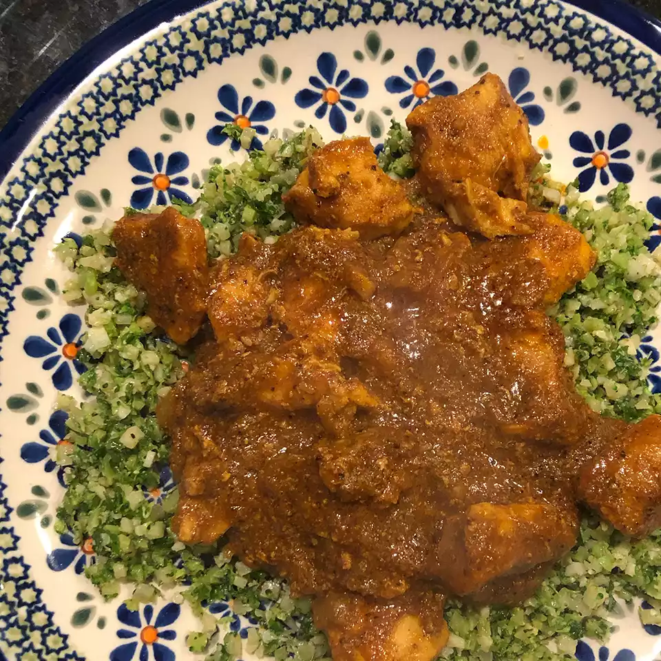

Home
Chicken Curry

Description
Chicken Curry is a flavorful Indian dish made by cooking chicken in a spicy and aromatic gravy. The curry base is
usually made with onions, tomatoes, ginger, garlic, and a mix of traditional Indian spices like turmeric, cumin,
coriander, and garam masala. The chicken is simmered in this masala until it's tender and full of flavor.
Depending on the region, chicken curry can be thick or thin, spicy or mild, and may include coconut milk, yogurt, or
cream for added richness. It’s a comforting and hearty dish, perfect with steamed rice or Indian breads like roti or
naan.
Ingredients
- 2 pounds skinless, boneless chicken breast halves
- 2 teaspoons salt
- ½ cup cooking oil
- 1 ½ cups chopped onion
- 1 tablespoon minced garlic
- 1 ½ teaspoons minced fresh ginger root
- 1 tablespoon curry powder
-
1 teaspoon ground cumin
-
1 teaspoon ground turmeric
- 1 teaspoon ground coriander
- 1 teaspoon cayenne pepper
- 1 tablespoon water
- 1 (15 ounce) can crushed tomatoes
- 1 cup plain yogurt
- 1 tablespoon chopped fresh cilantro
- 1 teaspoon salt
- ½ cup water
- 1 teaspoon garam masala
- 1 tablespoon chopped fresh cilantro
- 1 tablespoon fresh lemon juice
Steps:
- Gather all ingredients.
- Sprinkle the chicken breasts with 2 teaspoons salt. Heat oil in a large skillet over high heat; partially cook the
chicken in the hot oil in batches until completely browned on all sides. Transfer browned chicken breasts to a plate and
set aside.
- Reduce the heat to medium and add onion, garlic, and ginger to the oil remaining in the skillet. Cook and stir until
onion turns soft and translucent, 5 to 8 minutes. Stir curry powder, cumin, turmeric, coriander, cayenne, and 1
tablespoon of water into the onion mixture; allow to heat together for about 1 minute while stirring.
- Add tomatoes, yogurt, 1 tablespoon chopped cilantro, and 1 teaspoon salt to the mixture; stir to combine.
- Return chicken breast to the skillet along with any juices on the plate. Pour in 1/2 cup water and bring to a boil,
turning the chicken to coat with the sauce. Sprinkle garam masala and 1 tablespoon cilantro over the chicken.
- Cover the skillet and simmer until chicken breasts are no longer pink in the center and the juices run clear, about 20
minutes. An instant-read thermometer inserted into the center should read at least 165 degrees F (74 degrees C). Drizzle
with lemon juice to serve.
- Drizzle with lemon juice to serve.